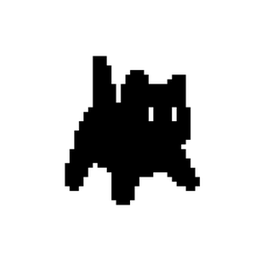
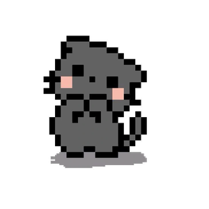
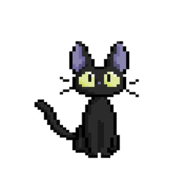
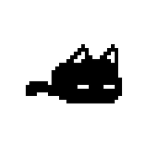
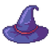
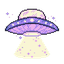
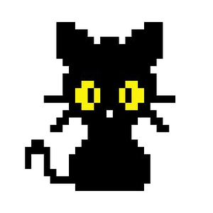
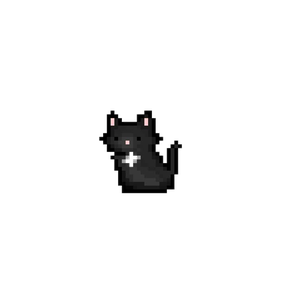
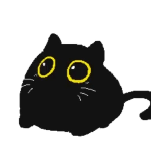
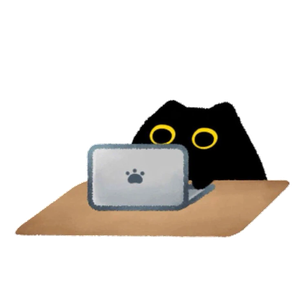

موجودات جادویی که قرنهاست دلهای ما رو تسخیر کردند...


اسکرول کن۷ دلیل جادویی
در فرهنگهای قدیمی، گربههای سیاه نماد شانس و خوشبختی بودند. ملوانان یک گربه سیاه رو با خودشون به سفر دریایی میبردن چون فکر میکردن بدشانسی رو دور میکنه!
موی سیاه و براق گربههای سیاه مثل مخمل شبانهست. وقتی نور خورشید بهشون میخوره، یه درخشش خاص پیدا میکنن که هیچ حیوان دیگهای نداره.
گربههای سیاه همیشه همراه جادوگرها بودن! اما این فقط یه افسانه نیست - واقعاً یه ارتباط عمیق و معنوی بین این موجودات وجود داره.

صاحبان گربههای سیاه معمولاً میگن که اونا خیلی مهربونتر و باهوشتر از بقیه گربهها هستن. انگار یه هوش ویژهای دارن!
گربههای سیاه توی عکسها فوقالعاده میشینن! کنتراست موی سیاه با چشمهای زرد یا سبزشون یه ترکیب بصری خیرهکنندهست.
گربههای سیاه به انرژی اطرافشون حساس هستن. خیلی از صاحبا میگن که گربه سیاهشون قبل از اتفاقات مهم، رفتارش عوض میشه.
فقط حدود ۱۳٪ گربههای دنیا سیاه هستن! این یعنی داشتن یه گربه سیاه مثل داشتن یه جواهر نادر و منحصربهفرد است.
مجموعه گربههای سیاه جادویی



چیزهایی که درباره گربههای سیاه نمیدونستی
پرزهای گربه سیاه زیر نور فرابنفش درخشش آبی پیدا میکنن!
رنگ چشمشون از زرد طلایی تا سبز زمردی متغیره.
پنجههای گربههای سیاه معمولاً کمی نرمتره!
توی شب تقریباً نامرئی هستن و فقط چشمهاشون میدرخشه!

اگه یه گربه سیاه از جلوت رد شد، نترس! این یه نشونه خوششانسیه. قدیما میگفتن هر گربه سیاهی یه جادوگر خوب توی خودش داره.— فرهنگ عامیانه
اگه شما هم گربه سیاه داری، برام بنویس!